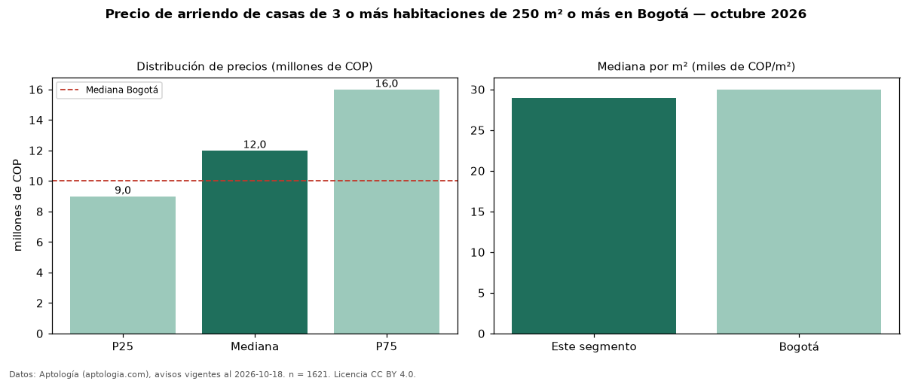

Precio de arriendo de casas de 3 o más habitaciones de 250 m² o más en Bogotá — octubre 2026
Con 1.621 avisos vigentes, el canon mediano de casas de 3 o más habitaciones de 250 m² o más en arriendo en Bogotá es COP 12 millones al mes. Frente a la mediana de las casas de 3 o más habitaciones en arriendo de Bogotá (COP 10 millones, n = 2.352), queda 20 % por encima; este segmento reúne el 69 % de esos avisos. Por metro cuadrado, la mediana es COP 28.947/m² al mes (n = 1610), 2 % por debajo de las casas de 3 o más habitaciones en arriendo de Bogotá (COP 29.637/m²). El área mediana anunciada es 400 m². La administración mediana declarada es COP 1,40 millones al mes (n = 616), aparte del canon. El estrato más frecuente es 6 (40 % de los avisos con estrato). La mitad central de los avisos va de COP 9,00 millones a COP 16 millones (razón 1,8), una dispersión moderada. La mediana de todas las casas en arriendo de Bogotá es COP 10 millones (+20 % de diferencia). Datos: Aptología (aptologia.com), CC BY 4.0 — https://www.aptologia.com/arriendo/bogota. Archivos: PDF, CSV con las cifras y gráfica PNG.

| Avisos únicos | 1621 |
|---|---|
| Percentil 25 | COP 9.000.000 |
| Mediana | COP 12.000.000 |
| Percentil 75 | COP 16.000.000 |
| Mediana por m² | COP 28.947 |
Fuente: avisos vigentes de portales inmobiliarios recopilados por Aptología, deduplicados (mínimo 30 avisos únicos por celda). Precios pedidos, no cerrados. Fecha: 2026-10-18.